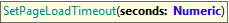

GXtest UI Commands - Timeouts (GeneXus 16)
Waiters and syncs are one of the biggest headaches in test automation. To avoid that, each time an action is executed against an HTML element GXtest waits (implicitly) for that element to be present on the webpage (until a certain amount of seconds) otherwise it will fail and cancel test execution. Moreover, GXtest takes care of several Ajax and JS events to make test automation robust while providing an interface to set timeouts using the following functions: SetImplicitWaitTimeout
Goal: To define maximum wait time (in seconds) that GXtest will wait for an element, on every interaction with the webpage. Default value: 10s Parameters:
Example of use: &driver.SetImplicitWaitTimeout(30) SetPageLoadTimeout Goal: To define maximum wait time (in seconds) that GXtest will wait for the webpage to load. Default value: 60s Parameters:
Example of use: &driver.SetPageLoadWaitTimeout(10) SetExplicitWaitTimeout
Goal: To define maximum wait time (in seconds) for the elements used to be present/visible on the webpage when using Waiter functions. Default value: 10s Parameters:
Example of use: &driver.SetExplicitWaitTimeout(20) |